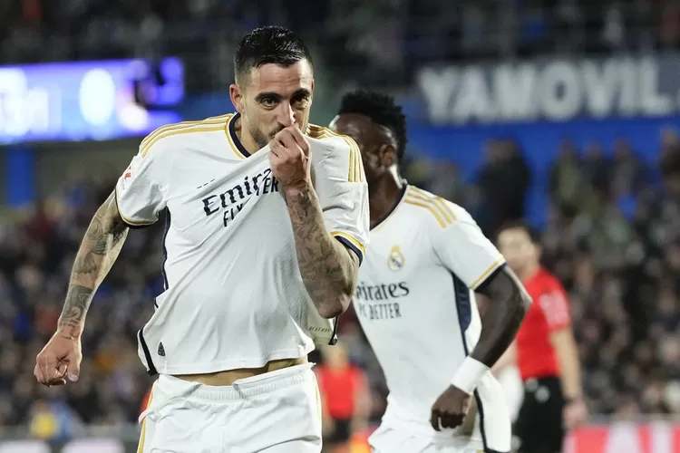

Joselu, Pemain Real Madrid yang Mengalami Transformasi Luar Biasa
Kamis, 09 Mei 2024 10:00 WIB
Joselu menjadi tokoh utama dalam kemenangan dramatis Real Madrid melawan Bayern Munich di Semifinal Liga Champions. Dalam pertandingan itu, striker asal Spanyol ini mencetak dua gol yang membawa timnya melaju ke Final di Wembley. Namun, dua tahun yang lalu, situasinya sangat berbeda bagi pemain asal Spanyol ini, yang pada saat itu masih di luar radar Real Madrid.
Pada Final Liga Champions 2022, Real Madrid berhadapan dengan Liverpool di Stade de France. Joselu hadir dalam pertandingan itu, namun bukan sebagai pemain, melainkan sebagai penggemar setia. Dia bahkan mengunggah story di Instagram-nya untuk menyatakan kehadirannya di stadion tersebut.
Kala itu, Real Madrid berhasil mengalahkan Liverpool dengan skor 0-1, sementara Joselu berada di barisan klub lain, Alavés.
Dua tahun kemudian, Joselu menjadi pahlawan dengan mencetak dua gol yang membuat para pendukung Real Madrid berharap untuk meraih gelar Liga Champions ke-15 di Santiago Bernabéu.
Setelah pertandingan, Joselu mengirim pesan kepada para pendukung Real Madrid di Meksiko. 'Saya ingin berterima kasih kepada seluruh penggemar Madrid di seluruh dunia. Terutama kepada Meksiko yang saya sukai, saya sudah beberapa kali pergi bersama keluarga saya dan mereka mendukung kami di Final.'
Mengenai pengalamannya mencetak dua gol yang membawa timnya lolos, Joselu menyebutnya sebagai sebuah mimpi yang menjadi kenyataan. 'Setiap orang bermimpi memiliki malam seperti ini. Saya selalu datang untuk membantu dan berkontribusi. Ancelotti tahu apa yang bisa saya berikan dan pada akhirnya saya senang dengan apa yang saya berikan. Senang karena memenangkan Liga dan berada di final Liga Champions,' ungkapnya.
Joselu juga menyoroti peran mentalitas para pendukung, pemain, dan klub dalam kesuksesan Real Madrid. 'Suporter mendorong kami, dan itulah mentalitas Real Madrid. Itulah perasaan Real Madrid, mereka bisa bangkit. Pertandingan seperti ini juga harus dimenangkan dengan hati dan Madrid memiliki banyak hati,' katanya.
Meskipun saat ini Joselu dipinjamkan oleh Espanyol, dia tidak menyembunyikan keinginannya untuk tetap bersama Real Madrid untuk musim depan. 'Saya fokus pada apa yang terjadi hari ini dan bahwa dalam tiga minggu ada final. Masa depan akan terlihat nanti. Saya ingin siap sepenuhnya untuk sisa musim,' tandasnya.